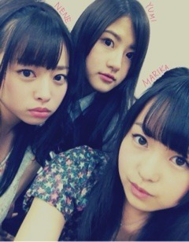

| 2012/06 22 Fri | 166回目*marika |
いつも読んでくださってる方、
初めて読んでくださった方、
コメントしてくださった方、
ありがとうございます♪
こんばんまりか

前回出した問題わかったかな⁇
そりゃ難しいよね

答えは...
右上 さゆりん
右下 かずみ
左 ゆったん
でした

丸顔をポイントに
描いてもらったんよ

なかなか難しかったわね。
また描いてもらったら
問題として載せよう
 がはは
がはは
がはは
今日はLessonでした。
Lesson終わったあと、
私がまひろに抱きついてたら
あみがずんずんやってきて
いきなりほっぺにちゅーしてきた笑
今日もあみおもしろかった


では、明日も元気に頑張りまりか‼
おやすみなさい
まりか
コメント(117)
2012/06/22 23:06